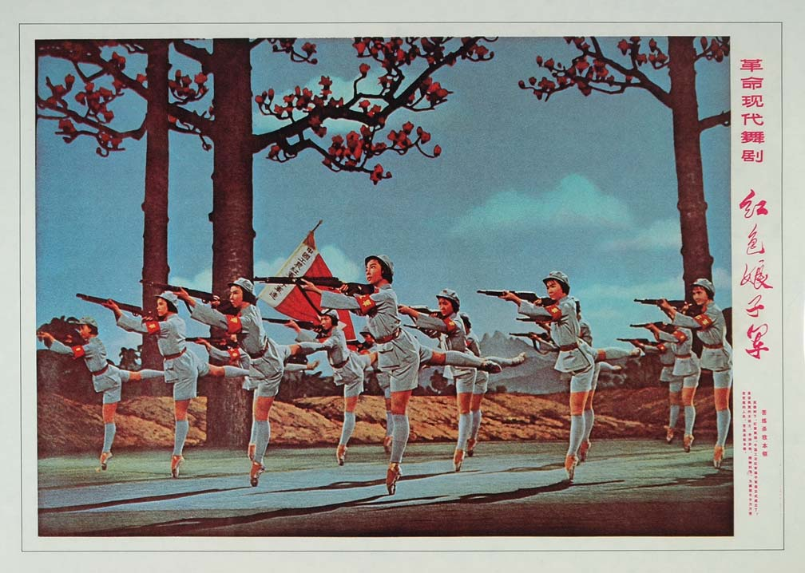
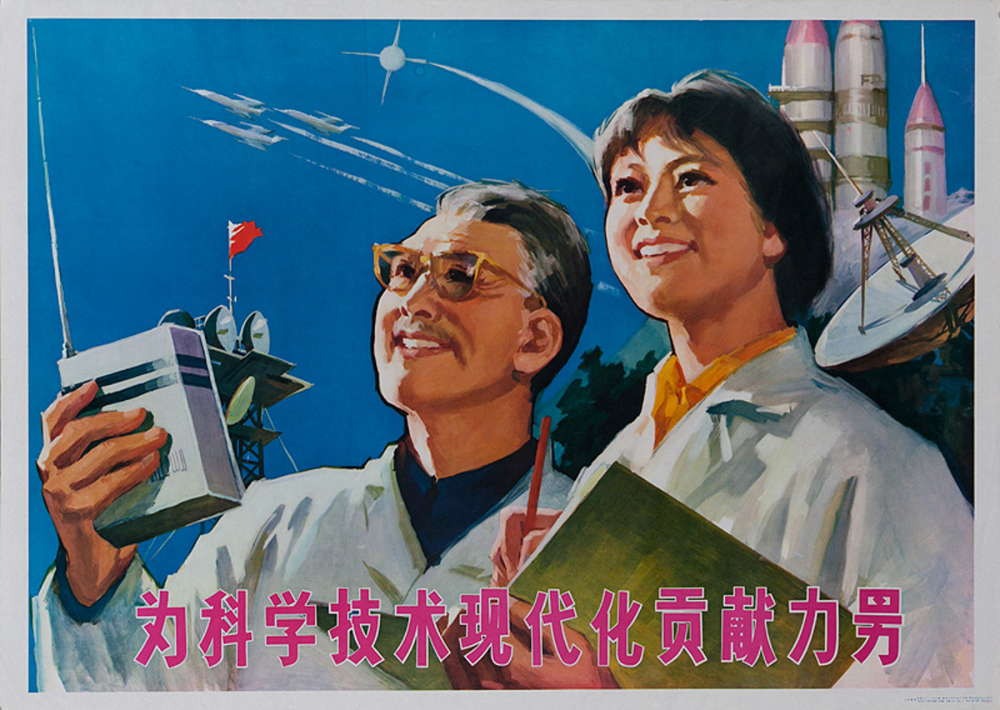
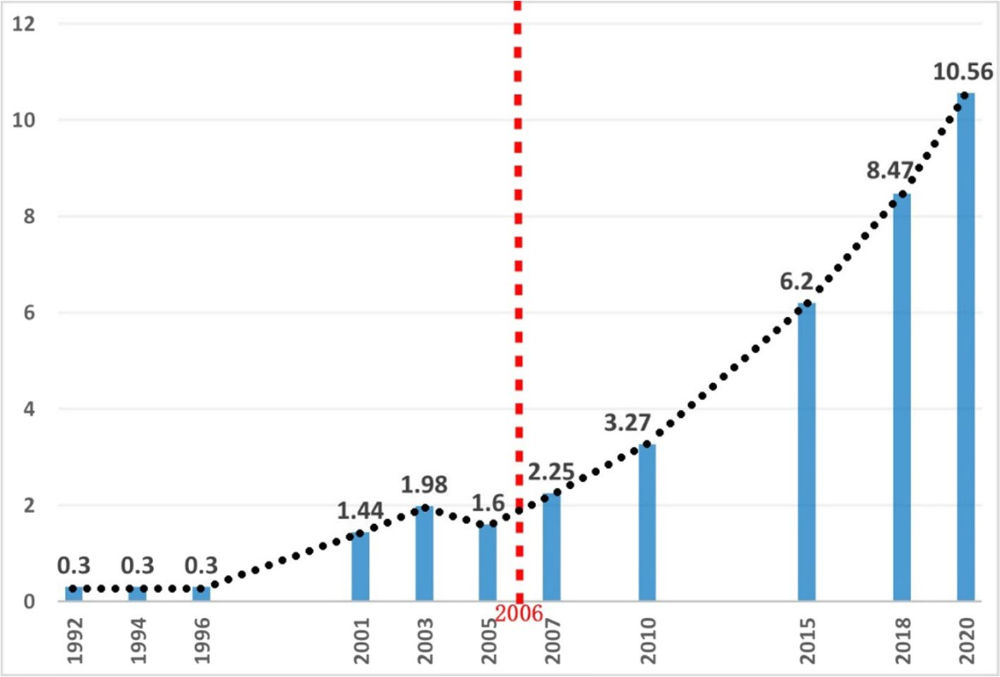

Early efforts in science popularisation and foundation building
科普 (Kēpǔ)
Early efforts in science popularisation and foundation building

Cultural Revolution disrupts scientific progress

Reform and Opening Up: Renewed focus on science and technology
Increased science communication efforts and establishment of legal framework

Digital era and government push for science literacy
Refs: Yin Lin, Li Honglin, (2020) Communicating Science: A Global Perspective
Jane Qiu (2020) Science Communication in China: A critical component of the global powerhouse